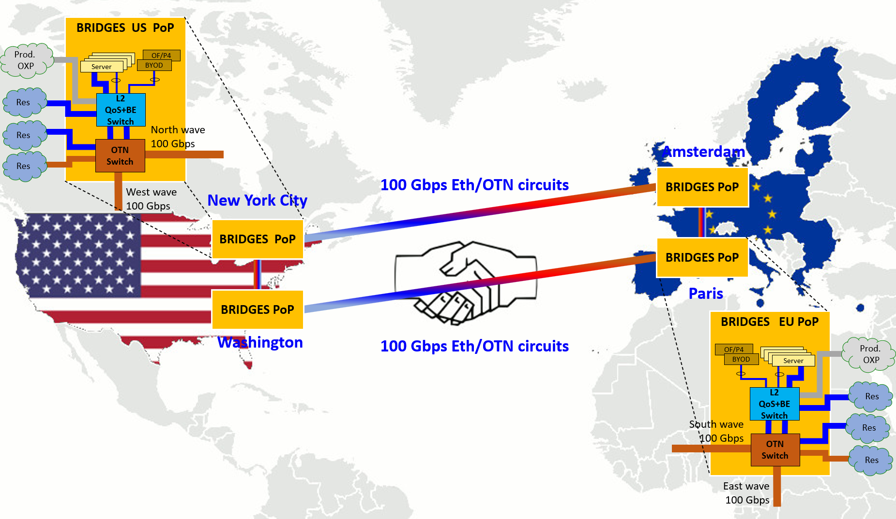
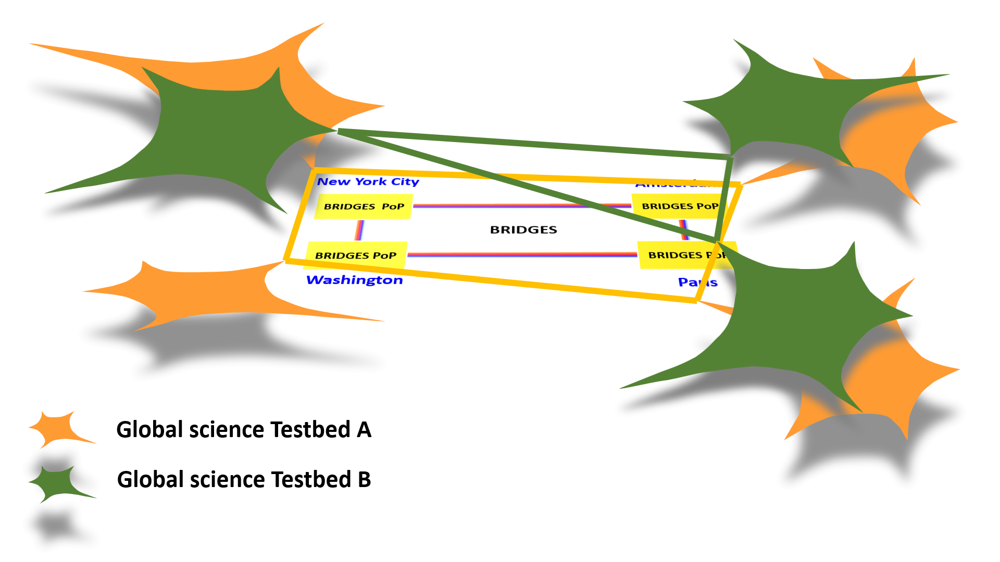

- Implementation
-
The BRIDGES infrastructure consists of four POPs interconnected with 100Gig links. The POPs are connected to national research infrastructures in both US and Europe. Each POP hosts the optical terminating the links, the L2 equipment for providing Ethernet access and compute resources that can be dynamically integrated into user testbeds.
-
BRIDGES is exploring virtualization as a rigorous architectural approach to all of cyber-infrastructure design and application. This comprehensive formal approach to how we perceive, manipulate, and leverage “cyber-resources” will enable users to dynamically build and modify testbeds with guaranteed link, switching and compute resources. These capabilities will dramatically reduce the time researchers need to set up and adjust their testbeds, they will cut the processes typically required to set up such environments. User testbeds will run over the BRIDGES infrastructure as ships in the night.

The envisioned virtualization architecture and features will be implemented based on the GTS software stack developed by GEANT and the foundation for its Generalized Testbed Service. The BRIDGES project team will star by deploying GTS and then improving the software in terms of usability and feature set.
For additional information, visit the project collateral materials or contact us.
